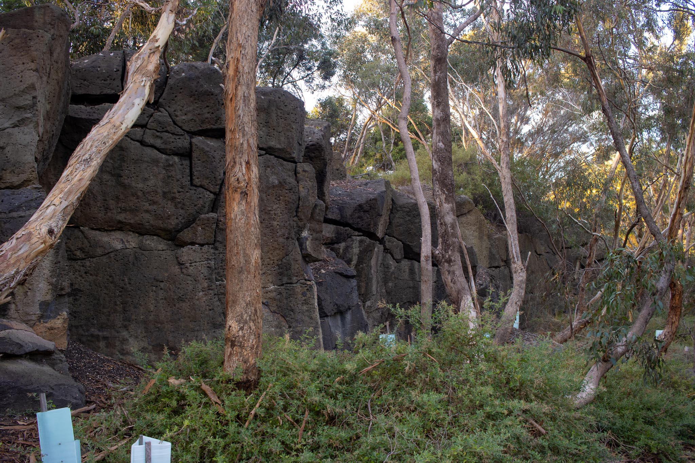
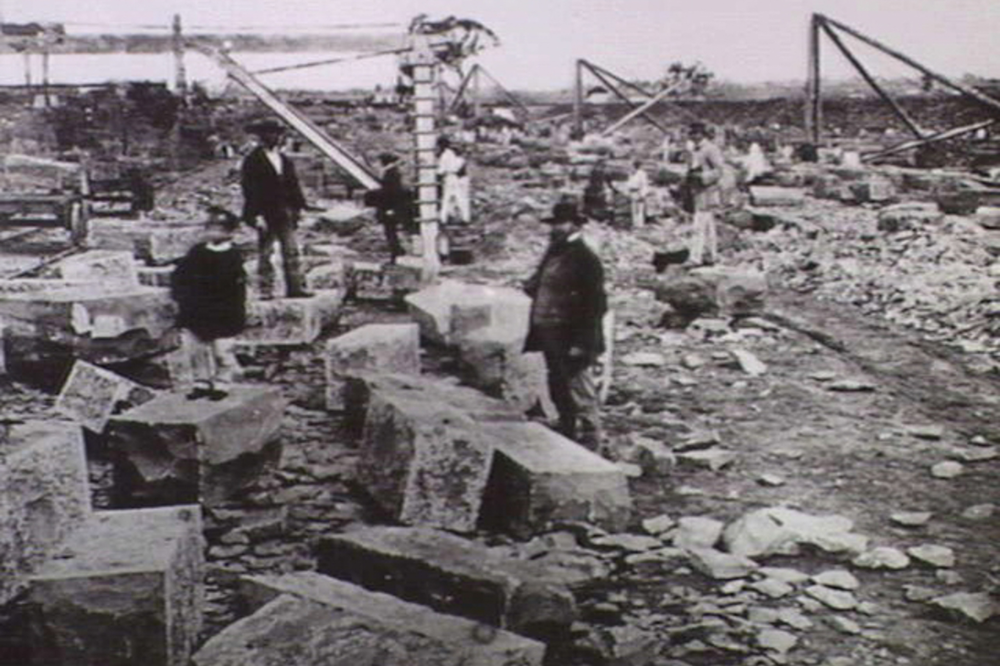
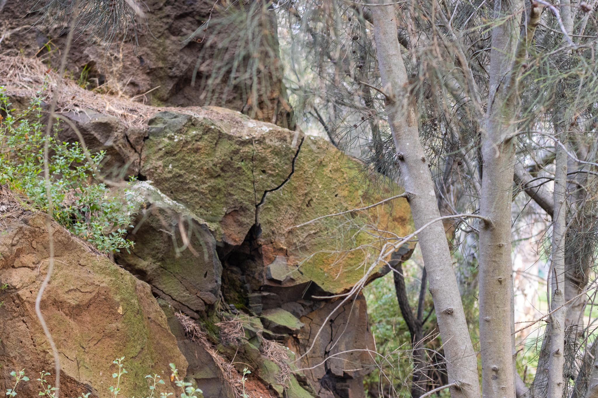

1 / 4

Walls of Quarry
2 / 4

Quarring in 1865
3 / 4

Reinforced Quarry Wall
4 / 4

Quarried Clif
The park remains quite visibly, and old quarry, the steep rock walls
and pit are the big indicators. They were quarrying bluestone
a remnant of the volcanic period of Australia's history, forming
form the lava flows around 5.5 to 2.6 million years ago.
A material you can see all over Melbourne. Quarrying began
by at least 1895 and continued till 1968, though most of
Newport's Bluestone ended up on ships returning to England
as ballast and used there.
Newport Lakes had 4 quarry holes on its site. Two became the lakes
you are currently inside. And the other 2 became tips and no
longer have evidence of being quarries, these are the park area
and dog park area.